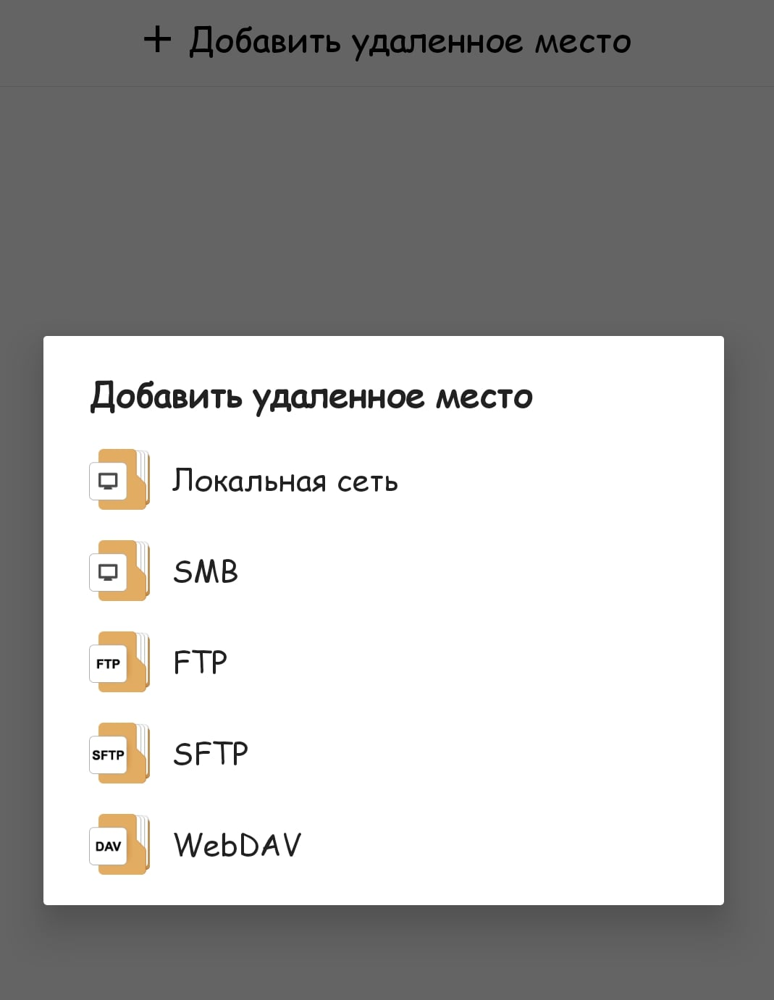
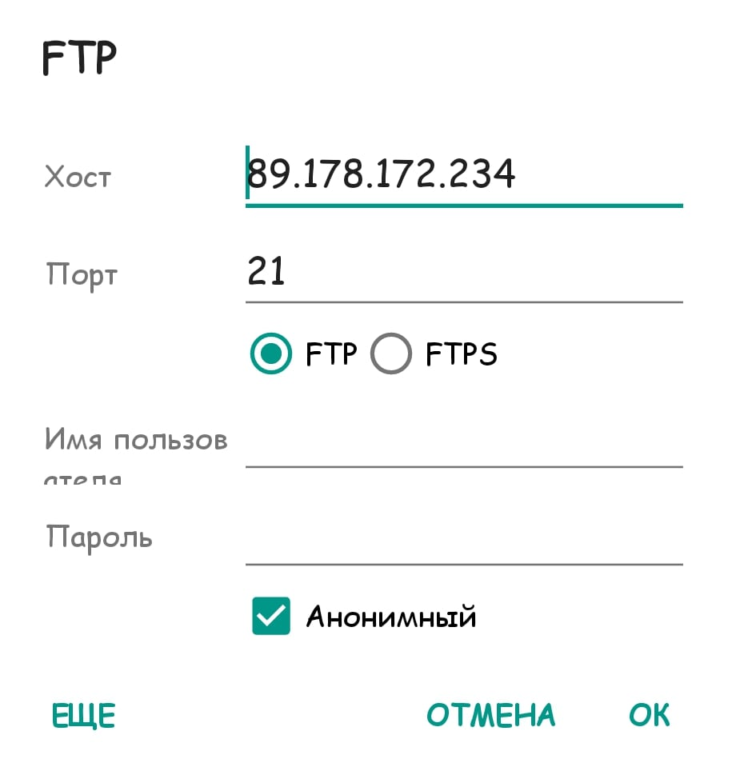
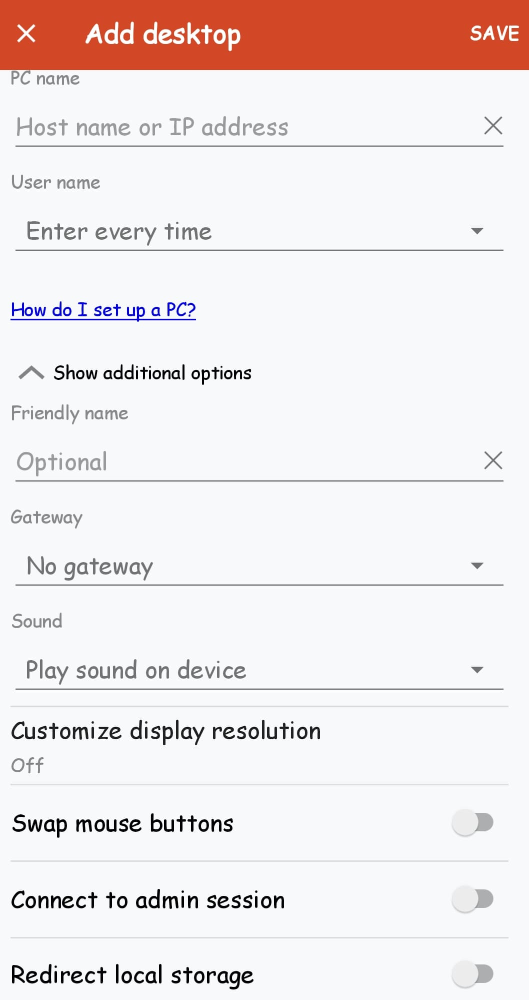

Shodan
Информация
Общие сведенья
Shodan - это специальный поисковик который каждый день скаринурет интернет для выявление уязвимых устройств и получение общей информации о них!Посмотреть результаты поиска может каждый но без ключей результаты очень ограниченные!
скачать апк Shodan можно с плеймаркета или здесь.Для использования понадобится ключ, их можно купить или найти в интернете!
Shodan постоянно сканирует каждый ip!Поэтому где это возможно стоит закрыть доступ из вне локальной сети!
Как подключаться?
Приложения
Файловый менеджер+ - отличный менеджер для подключения к FTP/SFTP/SMB и другим протоколам!Быстрая загрузка файлов, отображение скрытых/системных файлов, и многое другое делает его отличным решением для этих задач! 
Remote Desktop Tool - легко и доступно может подключиться к rdp протоколу!Главное в нем это простота роботы и скорость!
Здесь какой-то конкретный браузер кроме тор не посоветуешь, хоть он мало подходит для этих целей из за маленькой скорости передачи данных он наиболее анонимный!можете использовать любой другой браузер например Firefox как его сделать анонимным можно прочитать тут
!Используйте ввод типа адрес:порт!Топ запросов
Shodan
FTP - в основном использует порт 21 его мы и будем указывать при подключении!А чтобы найти фтп без пароля нужно произвести маленький запрос - ""220" "230 Login successful." port:21" далее берм ip вставляем в FM и ставим галочку на анонимный, все вы в FTP!Так же зайдя в браузер перед этим скопировав ip перед из запроса "Set-Cookie: iomega=" -"manage/login.html" -http.title:"Log In" также можно попасть в открытый фтп!
RDP - это протокол с помощью которого можно удаленно подключится к компьютеру!Для поиска открытых RDP нам поможет запрос "\x03\x00\x00\x0b\x06\xd0\x00\x00\x124\x00" вводим ip перед этим не забываем смотреть порт и подключаемся!Такое же есть и в VNC по запросу "authentication disabled" "RFB 003.008" обычно порт 5900-5903
Доступ к камерам мы будем получать просто с помощью браузера!Вбиваем запросы:
- "Server: yawcam" "Mime-Type: text/html"
- ("webcam 7" OR "webcamXP") http.component:"mootools" -401
- "Server: IP Webcam Server" "200 OK"